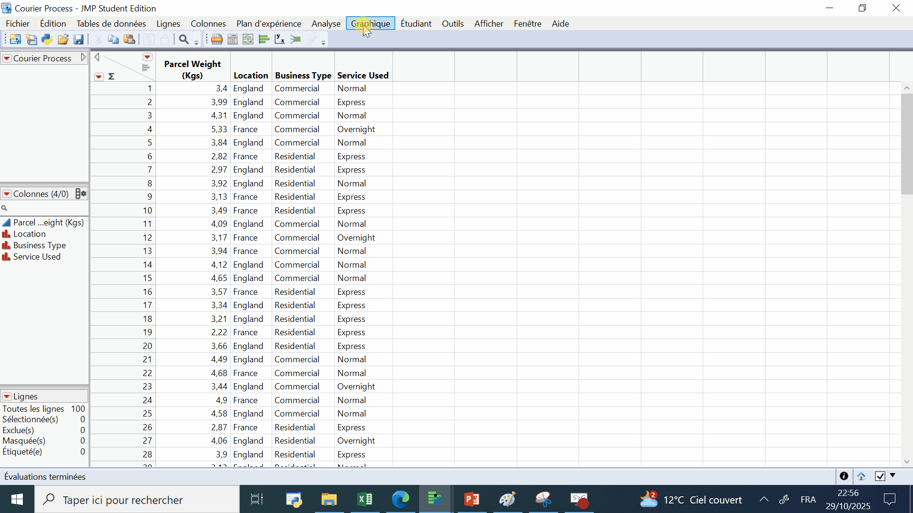

Procédure 19 · Graphiques
Compléter une boîte à moustaches par les effectifs
Procédure pas à pas
- Ouvrir Analyse → Mettre en tableau.
- Placer Parcel Weight dans la zone de colonnes et Service Used dans la zone de lignes, conformément au support.
- Remplacer la statistique d’agrégation par Nombre d’observations.
- Terminer puis, si souhaité, utiliser la commande de combinaison de fenêtres.
Télécharger les données pour JMP
Ouvrir ce fichier dans JMP, puis suivre les étapes de la procédure et les animations associées.
↓ Télécharger Courier Process.XLSFormat .XLS ; fichier d’exercice original, sans modification.
Jeu de données / résultat
Fichier cité : Courier-Process.xls
Point de vigilance : L’intitulé et les zones exactes peuvent varier selon la version de JMP et la configuration du tableau.
Démonstrations animées dans JMP
Animations extraites du PowerPoint « Lean Six Sigma avec JMP 003 ». Elles complètent les étapes numérotées ci-dessus.

Commentaires de l’enseignant
Aucun commentaire publié pour cette fiche.
Rédiger ou modifier un commentaire
Les modifications saisies ici sont conservées dans ce navigateur uniquement. Pour les rendre visibles aux étudiants, télécharge la fiche HTML modifiée puis remplace le fichier correspondant dans le dossier
jmp/de GitHub.